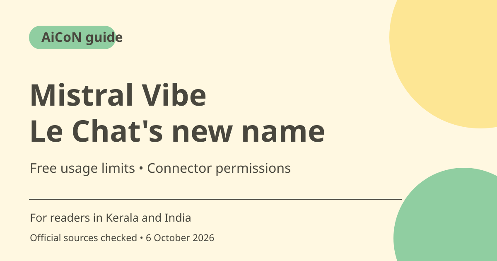

Mistral Vibe replaces Le Chat: free access and limits
Mistral's official help confirms Le Chat became Vibe on 12 August 2026, with existing accounts and conversations carried over. Free access remains limited. Check the current interface, plan and connector permissions before using multi-step work features.

What changed from Le Chat?
Mistral's August 2026 help announcement says account, plan, conversations and saved content move to Vibe. It gives chat.mistral.ai as the same login route. This is an officially documented name change, not a rumour. The product now presents both general work and coding capabilities, so distinguish its consumer assistant from developer tooling.
Work, Chat and Code wording can vary
The rename announcement describes Work, Code and Chat modes. The newer documentation explains a unified Work experience with a fast/think toggle and a progressive removal of the old Chat tab. An existing account may therefore show a different interface during migration. Do not assume every screenshot or old tutorial has the current labels.
Who is it useful for in Kerala and India?
Someone comparing AI assistants can use Free for quick questions, web search and simple tasks. A student or professional may want a draft or help organising public material. Test answers against original sources and check local-language quality on a small sample. This guide does not promise a particular Malayalam capability or unrestricted access to paid multi-step features.
Free is limited, not a full paid-agent entitlement
The current product page positions Free for simple tasks and Pro for agents, longer tasks and more coding. Pricing describes limited messages and web searches, image generation and up to five scheduled tasks on Free. Feature tables lose some availability markers in text extraction, so do not assume every connector or advanced tool listed elsewhere is included without limits.
Connected apps create real privacy and action risks
The documentation describes connectors to mail, files and work apps and approval prompts before sensitive actions such as sending, modifying or deleting. These are provider-described controls, not a reason to grant broad access without thought. Review requested permissions, limit connections to what you need and examine proposed recipients and changes before approving an action.
Paid and student terms need a live check
Official pricing shows paid plans and an education offer, but its displayed tax and student descriptions were not cleanly mapped in the fetched text. A separate FAQ gives a student figure, while nearby plan text describes eligibility conditions. This guide does not guess a final India or student price. Check verification, existing-account exclusions, duration, taxes and renewal before relying on a discount.
How to use it, step by step
- Open Mistral's official Vibe page. Existing users can follow the documented chat.mistral.ai route with the same login.
- Review whether the account shows unified Work or older Chat labels. Read the current plan limits rather than copying an old tutorial.
- Begin with a simple non-sensitive task such as summarising a public page or drafting an outline.
- Ask for sources when factual claims matter and open those sources. Correct dates, names and local context before using the answer.
- If using connected apps, inspect the requested permissions and only connect a service needed for the task.
- For multi-step actions, review any plan and approval prompt carefully. Check who receives a message, which file changes and whether anything is deleted.
- Before a scheduled task or upgrade, confirm the plan allowance, intended schedule, billing and cancellation. Free lists up to five scheduled tasks, not unlimited automation.
Cost, eligibility and limits
| Free | ₹0 plan with limited messages, searches and other usage; pricing lists up to five scheduled tasks. |
|---|---|
| Paid | Pro, Team and Enterprise options exist. A reliable final INR checkout price was not established here; confirm taxes and billing before paying. |
| Education | An offer is described, but account eligibility, term length and the final price need checking. Do not assume every student or existing account qualifies. |
| Permissions | Connected-app access and actions should be reviewed separately from the plan price. A privacy policy is not permission to share private material. |
Frequently asked questions
Is Le Chat really now called Vibe?
Yes. Mistral's official help announcement dated 12 August 2026 confirms it.
Are my old conversations supposed to carry over?
The announcement says accounts, plans, conversations and saved content carry over through the same login route.
Does Free include unlimited scheduled work?
No. Pricing lists up to five scheduled tasks and other usage limits.
Official sources
Checked 6 October 2026. Features and prices can change. This is a guide, not a personal product test.